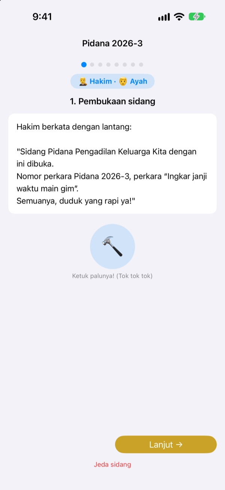
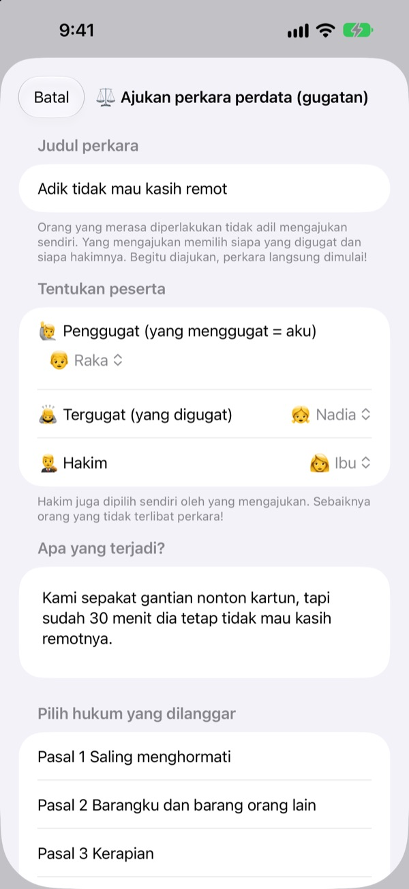
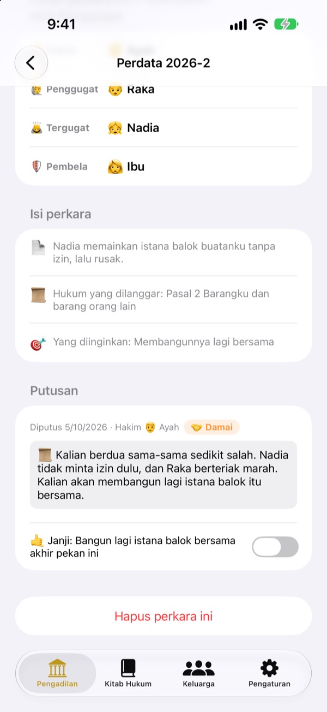
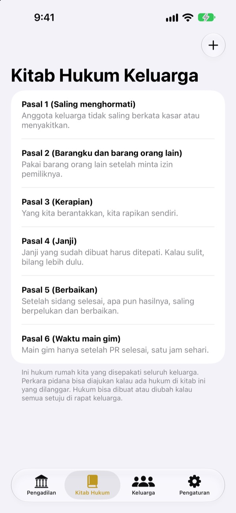

Merasa tidak adil?
Jangan menangis, ayo sidang.
Anak mengajukan gugatan sendiri sebagai penggugat, keluarga berbagi peran sebagai hakim dan pengacara. Di setiap tahap ada naskah yang memberi tahu giliran siapa dan apa yang diucapkan, jadi sidang pertama pun berjalan seperti sungguhan.
Tanpa iklan, tanpa pembelian, tanpa daftar. Semua tersimpan di perangkat ini saja.

Coba gelar sidang
Perkara singkat: "Adik tidak mau memberikan remote TV." Ganti tingkat kosakata di atas, ketuk palu, dan nyalakan timer. Ada suaranya, jadi cek volume dulu.
"Dia duluan!" Capek selalu jadi wasit?
Kalau ada pertengkaran, biasanya orang dewasa yang akhirnya memutuskan. Yang kalah menangis karena merasa tidak adil, yang menang juga tidak tahu kenapa ia menang. Pengadilan Keluarga memberi anak urutan yang jelas: ceritakan sisimu sampai habis, dengarkan sisi lain sampai selesai. Putusannya diakhiri janji, bukan sekadar hukuman.
Yang merasa dirugikan menggugat sendiri
Siapa yang merasa diperlakukan tidak adil menjadi penggugat dan mengajukan gugatan. Menggugat siapa dan siapa yang jadi hakim, penggugat yang menentukan. Anak bahkan bisa menggugat ayah dan ibu.
Melihat ada yang melanggar aturan rumah? Jadilah jaksa dan ajukan perkara pidana. Hakim hanya boleh orang yang bukan penggugat maupun tergugat.

Putusan diakhiri dengan janji
Bersama putusan ditetapkan janji atau hukuman, lalu dicentang sampai ditepati. Perkara yang selesai menjadi putusan-putusan keluarga kalian.
Saran hukuman dimulai dari memperbaiki keadaan dan memulihkan perasaan, lebih ke memperbaiki hubungan daripada menghukum. Mengurangi waktu main game atau TV jadi pilihan terakhir.

Rumah kita, hukum kita
Tulis aturan yang disepakati keluarga sebagai pasal, misalnya saling menghormati, membereskan barang, dan menepati janji, lalu tambah atau ubah kapan saja. Di gugatan, pilih pasal yang dilanggar.
Belajar Pengadilan menjelaskan tugas hakim, penggugat, jaksa, dan pengacara, serta urutan jalannya sidang.

Mulai dalam tiga langkah
- 1
Tambahkan keluarga
Cukup nama dan satu emoji. Tidak perlu akun.
- 2
Ajukan perkara
Tidak adil? Perdata. Melanggar aturan rumah? Pidana. Lalu pilih hakim.
- 3
Buka sidang
Ikuti naskah, jaga waktu dengan timer, dan bacakan putusan dengan palu.
Kata-kata yang tumbuh bersama anak
- Hakim
- Kata mudah: Wasit · Istilah hukum: Hakim Ketua
- Penggugat
- Kata mudah: Yang Merasa Tak Adil · Istilah hukum: Penggugat
- Tergugat
- Kata mudah: Yang Menjawab · Istilah hukum: Tergugat
- Jaksa
- Kata mudah: Pelapor · Istilah hukum: Jaksa
- Terdakwa
- Kata mudah: Yang Menjawab · Istilah hukum: Terdakwa
- Pembela
- Kata mudah: Penolong · Istilah hukum: Pembela
- Perdata
- Kata mudah: Tak Adil · Istilah hukum: Perdata
- Pidana
- Kata mudah: Ingkar Janji · Istilah hukum: Pidana
Pilih tingkat kosakata di Pengaturan, kata di layar dan di naskah akan berubah sekaligus. Coba Kata mudah untuk anak TK dan Standar untuk anak SD.
Pertanyaan umum
Mulai umur berapa?
Anak yang sudah bisa membaca bisa bermain bersama orang tua. Dengan naskah, petunjuk, dan tingkat Kata mudah, anak yang lebih kecil juga bisa ikut kalau orang dewasa membacakan.
Benar-benar gratis?
Ya. Tanpa iklan dan tanpa pembelian untuk membuka fitur. Di Pengaturan ada tip opsional untuk mendukung pengembang, yang tidak membuka maupun mengunci fitur apa pun.
Perlu internet?
Tidak. Sidang dan catatan berjalan sepenuhnya offline. Internet dan masuk iCloud hanya diperlukan untuk mengirim masukan dari Pengaturan.
Catatan disimpan di mana?
Data keluarga, aturan, sidang, dan putusan hanya disimpan di perangkat dan tidak dikirim ke server mana pun. Yang sampai ke pengembang hanya masukan yang kamu kirim sendiri dan statistik penggunaan anonim yang tidak mengenali dirimu.
Bisa dicadangkan atau dipindah ke perangkat lain?
Gunakan Simpan catatan di Pengaturan untuk mengekspor semuanya ke file, lalu Muat catatan di perangkat lain, semuanya kembali seperti semula. Cadangan dari versi web lama juga bisa dimuat.
Bisa dipakai di iPad?
Bisa, di iPhone dan iPad. Layar besar pas untuk sidang dengan seisi rumah duduk melingkar.
Bagaimana kalau hukumannya terlalu berat?
Saat jaksa meminta hukuman, naskah mengingatkan agar tidak terlalu berat dan bisa dijalankan. Saran hukuman juga dimulai dari memperbaiki hubungan: memperbaiki keadaan, memulihkan perasaan, dan bertukar sudut pandang.
Saya ingin menghapus semua data.
Menghapus app akan menghapus semua catatan di perangkat. Tidak ada yang pernah keluar dari perangkat, jadi tidak ada yang tersisa di tempat lain. Untuk menghapus masukan yang sudah dikirim, kirimi kami email.
Ada bug, ide, atau hal lain? Tulis ke leeo@kakao.com. Kamu juga bisa mengirim masukan dari pengaturan app.